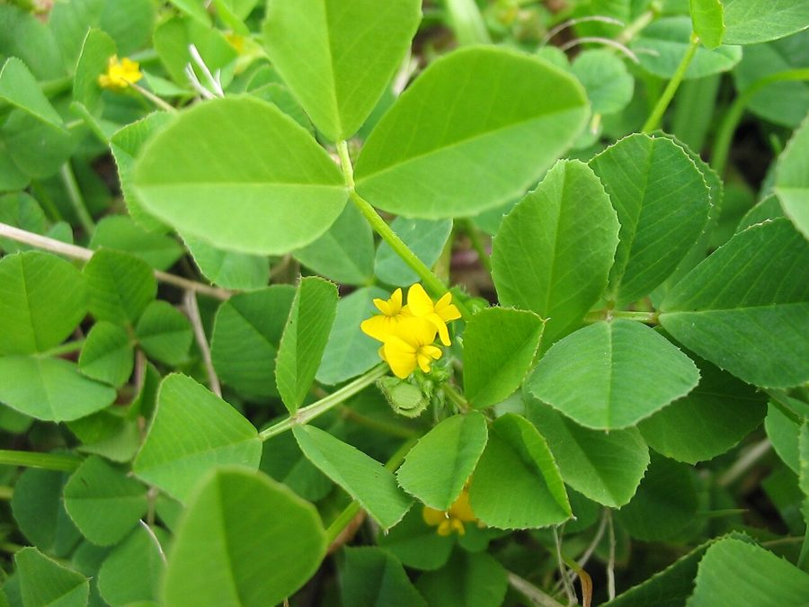

बर क्लोवरBur Clover
Medicago polymorpha · Fabaceae · FLR-0402

- Scientific name वैज्ञानिक नाम
- Medicago polymorpha L.
- Family कुल
- Fabaceae
- Hindi हिंदी
- बर क्लोवर
- Local names स्थानीय नाम
- bur clover, burclover
- Status here यहाँ की स्थिति
- naturalized
- Movement आवागमन
- Resident, here all year
- Known from कहाँ दर्ज
- Others have published records from the Basti–Ayodhya districts बस्ती–अयोध्या के ज़िलों से दूसरों के प्रकाशित अभिलेख
- IUCN IUCN
- not evaluated
- Review समीक्षा
- not yet reviewed
When to look कब देखें
Expected mainly in January, February, March, April, October, November, December. मुख्यतः जनवरी, फ़रवरी, मार्च, अप्रैल, अक्टूबर, नवंबर, दिसंबर में अपेक्षित।
बर क्लोवर / Bur Clover
Medicago polymorpha L. — Fabaceae
बर क्लोवर — यह रबी की फसलों, चरागाहों और नम मेड़ों पर उगने वाला तीन पत्तियों वाला एक दलहनी खरपतवार है। इसकी पत्तियाँ तिपतिया घास जैसी होती हैं और छोटे पीले मटर जैसे फूल खिलते हैं। इसकी सबसे खास पहचान इसकी गोल मुड़ी हुई फली है, जिस पर कांटेदार हुक बने होते हैं जो जानवरों के बालों और कपड़ों से चिपक जाते हैं।
Quick Identification त्वरित पहचान
| Feature | Description |
|---|---|
| Plant habit | Procumbent or sprawling annual herbaceous legume |
| Leaves | Trifoliolate; leaflets obovate-cuneate, faintly toothed near apex |
| Stipules | Deeply laciniate or comb-like cut into slender segments |
| Inflorescence | Short axillary peduncles bearing few small yellow pea-flowers |
| Corolla | Bright yellow papilionaceous corolla, scarcely exceeding calyx |
| Fruit | Spiny discoid pod coiled into several loose flat spirals |
Field tip: Check the fruit and stipules: the pod is a tight spiny flat coil, and the stipules at the base of the leaf stalks are deeply shredded into comb-like fringes.
हिंदी: तीन पत्तियों के आधार पर कटी हुई पत्तीनुमा संरचना (स्टिप्यूल) और कांटों से घिरी मुड़ी हुई गोल फली इसकी पहचान है।
Morphology आकारिकी
Measurement not available in consulted sources.
A sprawling or prostrate annual legume forming spreading circular patches on moist ground. Taproot slender, bearing small nitrogen-fixing bacterial nodules. Stems procumbent or ascending, much-branched from the base, angular, subglabrous or sparsely puberulous, green.
Leaves alternate, pinnately trifoliolate; leaflets obovate to wedge-shaped (cuneate), truncate or retuse at the apex, finely denticulate in the upper half, glabrous on the upper surface, appressed-pubescent beneath. Petioles slender, longer than the leaflets. Stipules conspicuous, leafy, deeply laciniate with long slender tooth-like divisions.
Inflorescence a condensed axillary raceme on short peduncles, carrying two to six small flowers. Calyx campanulate, five-toothed, with lanceolate teeth about as long as the tube. Corolla papilionaceous, bright yellow; standard petal obovate, wings oblong, keel shorter and obtuse.
Fruit an indehiscent coiled pod (legume), forming two to four loose, flat-topped spirals, prominently reticulate on the faces, armed along the outer margin with a double row of curved, hooked or straight spines. Seeds several per pod, kidney-shaped, yellowish-brown to dark brown, smooth.
हिंदी: तने जमीन पर फैले होते हैं। तीन-तीन के समूह में पत्तियाँ होती हैं जिनके ऊपरी किनारे पर हल्के दाँते होते हैं। छोटे पीले फूल खिलते हैं और फलियां गोल मुड़ी हुई और कांटेदार होती हैं।
Behaviour & Ecology व्यवहार और पारिस्थितिकी
Native to the Mediterranean basin, now widely naturalized across the Gangetic plains and warm temperate regions worldwide. It thrives in well-watered alluvial soils with good lime and organic content, flourishing in wheat, barley, and gram fields.
Through symbiotic Rhizobium bacteria in its root nodules, it fixes atmospheric nitrogen, enriching the surrounding soil. The hooked spines on its coiled pods are adapted for epizoochory, catching in the wool of sheep, cattle hair, and human clothing to facilitate dispersal across pasturelands and agricultural tracts.
हिंदी: यह पौधा मिट्टी में नाइट्रोजन स्थिर करके उपजाऊपन बढ़ाता है। इसके कांटेदार फल मवेशियों के शरीर से चिपककर दूर-दूर तक पहुँच जाते हैं।
Life Cycle / Phenology जीवन चक्र
Germination takes place promptly following post-monsoon cultivation and irrigation from October to December. Vegetative branches spread outwards during the cool weather of December and January.
Flowering begins in January and peaks in February and March. Coiled spiny pods mature from late February through April. As the weather warms in April, the vegetative parts dry to a pale straw colour and crumble, leaving the durable spiny burs scattered over the dry field surface.
हिंदी: अक्टूबर-दिसंबर में अंकुरण होता है। जनवरी से मार्च के बीच फूल और फलियां आती हैं। अप्रैल में गर्मी आते ही पौधा सूख जाता है और फल जमीन पर बिखर जाते हैं।
Associated Species / Interactions सहजीवी प्रजातियाँ
Small solitary bees and honeybees visit the yellow flowers for nectar and pollen, tripping the explosive pollination mechanism of the keel. The foliage is heavily browsed by grazing goats, sheep, and cattle.
Frequently grows alongside other winter leguminous herbs and weeds such as sweet clover, white sweet clover, and alyce clover. The spiny burs are collected and hoarded by field rodents and harvester ants.
हिंदी: इसके पीले फूलों पर छोटी मक्खियाँ और मधुमक्खियाँ आती हैं। भेड़, बकरियाँ और गाय-बैल इसे बड़े चाव से चरते हैं।
Pests and Diseases कीट और रोग
Foliage is susceptible to pea aphids and clover aphids during warm dry spells in February. Rust and powdery mildew occasionally attack older leaves towards the close of the winter season.
हिंदी: फरवरी के महीने में पत्तियों पर कभी-कभी माहू कीट या फफूंद के धब्बे पड़ जाते हैं।
Agricultural / Human Relevance कृषि प्रासंगिकता
In cultivated wheat and mustard crops, dense growth of bur clover can compete with young seedlings.
In sheep-farming tracts, the spiny burs present a nuisance by matting into sheep wool, reducing its market quality.
हिंदी: गेहूं और सरसों में घना उगने पर यह छोटे पौधों से होड़ करता है, और भेड़ों के ऊन में इसके कांटे उलझ जाते हैं।
Expected Locally स्थानीय रूप से अपेक्षित
Not a field record. Written from published accounts for eastern Uttar Pradesh. No confirmed local sighting yet — if you have seen it, that is what the atlas needs.
अभी तक स्थानीय पुष्टि नहीं। यह विवरण प्रकाशित स्रोतों से है, किसी अवलोकन से नहीं।
Expected in irrigated winter fields, grassy river terraces, canal embankments, and village pasture grounds across Basti, Ayodhya, and neighbouring districts from November through April. GBIF holds published records from these districts. The first verifiable record from the region will be a dated photograph of flowering plants or a population in a weed habitat or field border with district and coordinates.
हिंदी: बस्ती और अयोध्या के सिंचित खेतों, नहर की पटरियों और चरागाहों में सर्दियों के दौरान इसे आसानी से देखा जा सकता है।
Distribution वितरण
Global range: Native to the Mediterranean region, Western Asia, and North Africa; naturalized extensively across temperate and subtropical regions of the world.
In India: Naturalized throughout northern India, Punjab, the Gangetic plain, and higher elevations of peninsular India.
In Uttar Pradesh: Widely distributed in the central and eastern agricultural plains as a winter field weed and forage herb.
In Basti district / eastern UP: Expected in winter rabi plots, riverine silt banks, and grazing grounds across the district.
हिंदी: भूमध्यसागरीय क्षेत्र का मूल पौधा होने पर भी यह उत्तर भारत और उत्तर प्रदेश के मैदानी क्षेत्रों में पूरी तरह प्राकृतिक रूप से बस चुका है।
Research Questions शोध प्रश्न
- How much atmospheric nitrogen does this species fix per square metre under local alluvial soil conditions in Basti?
- What is the impact of bur clover intercropping on subsequent zaid or kharif crop yields in eastern UP?
- Which grazing domestic animals exhibit the strongest preference for this species over other winter weeds? / कौन से पालतू मवेशी अन्य खरपतवारों की तुलना में इसे सबसे अधिक पसंद करते हैं?
- What percentage of spiny pods remain viable in the soil after passing through the digestive tracts of grazing goats? / बकरियों के पाचन तंत्र से निकलने के बाद इसके कितने प्रतिशत बीज उगने योग्य बचते हैं?
- Can school children find the coiled spiny pods on field edges and count how many turns make up each spiral?
हिंदी: क्या यह पौधा गेहूं के खेतों में खाद की जरूरत को कम कर सकता है और मवेशी इसे कितना पसंद करते हैं?
Similar Species मिलती-जुलती प्रजातियाँ
| Species | How to tell apart | हिंदी | |
|---|---|---|---|
| `[[senji\ | Melilotus indicus]]` | Erect branched herb; pods small, subglobose, smooth or reticulate, completely lacking spines | पौधा सीधा होता है और फलियां छोटी, गोल और बिना कांटे की होती हैं |
| `[[white_sweet_clover\ | Melilotus albus]]` | Taller erect herb with elongated racemes of white flowers and spineless pods | पौधा लंबा होता है, फूल सफेद होते हैं और फलियां कांटेदार नहीं होतीं |
Field rule: Look for the coiled, spiny flat burs and deeply shredded comb-like stipules at the base of the trifoliolate leaf stalks.
हिंदी: पत्तियों के आधार पर कटी हुई कंघी जैसी रचना और फलियों पर मुड़े हुए कांटे इसे अन्य तिपतिया घासों से अलग करते हैं।
Taxonomy & Classification वर्गीकरण
Original description. Described by Carl Linnaeus in 1753 in Species Plantarum, volume 2, page 779, based on European material.
Subspecies. Often treated in older Indian floras under the synonym Medicago denticulata Willd. (Duthie 1903; Hooker 1876), which represents the spiny-fruited variety common across the Indo-Gangetic plain.
Family and order placement. Belongs to family Fabaceae (subfamily Faboideae, tribe Trifolieae), order Fabales.
Phylogenetic notes. Closely related to alfalfa (Medicago sativa) and black medick (Medicago lupulina), sharing similar floral morphology and nitrogen-fixing symbioses.
IUCN status rationale. Not evaluated by the IUCN Red List. It is an exceedingly common, widespread, and ecologically successful weed and forage plant.
हिंदी: यह फैबेसी (मटर कुल) का पौधा है। लिनियस ने 1753 में इसका मूल वर्णन किया था।
Photo Gallery फोटो गैलरी
No photos yet — add field photos to media/species/bur_clover/ and run node scripts/sync_photos.js.
Photos needed आवश्यक फोटो
- [ ] Trifoliolate leaves and laciniate stipules (तीन पत्तियाँ और कटी हुई स्टिप्यूल)
- [ ] Small yellow flowers in axillary clusters (छोटे पीले फूल)
- [ ] Mature coiled spiny pods (कांटेदार मुड़ी हुई फलियाँ)
References संदर्भ
- Linnaeus, C. (1753). Species Plantarum, vol. 2, p. 779.
- Duthie, J. F. (1903). Flora of the Upper Gangetic Plain and of the Adjacent Siwalik and Sub-Himalayan Tracts, vol. 1, part 1, p. 211. (as Medicago denticulata)
- Hooker, J. D. (1876). The Flora of British India, vol. 2, p. 90. (as Medicago denticulata)
- Chopra, R. N., Nayar, S. L. & Chopra, I. C. (1956). Glossary of Indian Medicinal Plants, Council of Scientific and Industrial Research, New Delhi, p. 163.
- GBIF Occurrence Data — Medicago polymorpha, India (2025).
Source file: species/flora/weeds/bur_clover.md